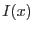
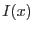

This function may be performed alone by calling the script with entrystage and finalstage=`fluxtorand'.
The purpose of this function is to prepare for the matching stage (section 4.3.9). In section 4.3.1, it is described how, for each simulated source, the original random number which became transformed into the flux value for that source was retained in the column FLUXRAND. Actually this number can easily be recalculated from equation 2, if one has the flux value. (In this equation  represents the flux,  the desired evenly-distributed random number and
represents the flux,  the desired evenly-distributed random number and  is the differential logN-logS curve.) For purposes of matching detected and simulated sources it is desirable to apply the same transform to the detected source flux values. This is done by the present function, which calls eimsim
task fluxlinearize. The result, and its uncertainty, are written respectively to 4-byte-real columns LINF and LINF_ERR in the list of detected sources.
is the differential logN-logS curve.) For purposes of matching detected and simulated sources it is desirable to apply the same transform to the detected source flux values. This is done by the present function, which calls eimsim
task fluxlinearize. The result, and its uncertainty, are written respectively to 4-byte-real columns LINF and LINF_ERR in the list of detected sources.